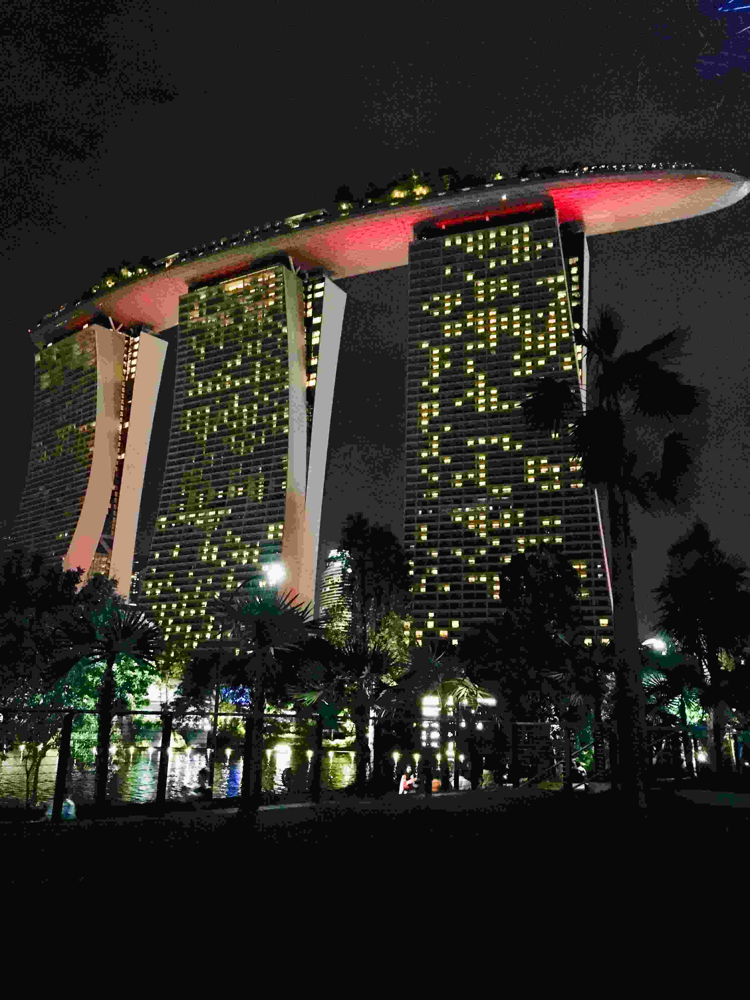

June 16, 2019
In the opening blog of this series,
Avi Gupta, an undergraduate Student in the
Department of Material Science and Engineering from the Y15
batch, has penned down his experiences of research intern in
Nanyang Technological University starting from his subtle urge
for a research intern to transforming into a more confident
individual after completing one. He was also a Core Team
member, in the Operations division at the Counselling Service.
Owing to his experiences he has chosen to pursue higher
studies(PhD) in the field of Bio-Engineering.
Nanyang Technological University is the second oldest public
autonomous research university of Singapore. One of the best
in the world, this university was ranked 12th in the World
and 3rd in Asia by QS World university ranking and is the
3rd best university in the world for Material Sciences in
particular.

“Nahin maa, abhi tak kisi ka reply nahin aaya.” As I sat on
the stairs of the library, the somberness in this reiterating
expression overpowered my fear for MSE301’s end sem. This
thought of not getting an intern had been bothering me for a
while (rather an entire semester). Maybe this fear was going
to daunt me some more.
Before I dwell into the details of my internship experience, I
am Avi Gupta, *insert rhetorical educational status* and I
interned in Nanyang Technological University, Singapore.
People often ask me why I chose a research intern over an
industrial intern. If you think that I might provide you with
the key to figuring out whether research is the right fit for
you, you might be mistaken. Frankly speaking, even I don’t
know what made me so desperate for a research intern and turn
a blind eye towards the industrial one.
*Clichéd reasoning for research intern ahead. The reader is
advised to dwell further at his/her own risk*
 I like to believe that I am a free individual and I deserve
the freedom to work on my own ideas, expand my knowledge base
in the domain of my academic interest, and the freedom to
choose my own time to go to work. Alternatively, I reckon that
maybe being born into a family of academicians, I was
hardwired to pursue higher studies after my under-graduation,
and a research intern seemed like the next logical step.
Having an interest in the field of Biomaterials and pursuing a
minor in “Tissue Engineering”, I decided to give one last shot
to research before I concluded whether ‘higher studies’ was
something I was willing to pursue.
I like to believe that I am a free individual and I deserve
the freedom to work on my own ideas, expand my knowledge base
in the domain of my academic interest, and the freedom to
choose my own time to go to work. Alternatively, I reckon that
maybe being born into a family of academicians, I was
hardwired to pursue higher studies after my under-graduation,
and a research intern seemed like the next logical step.
Having an interest in the field of Biomaterials and pursuing a
minor in “Tissue Engineering”, I decided to give one last shot
to research before I concluded whether ‘higher studies’ was
something I was willing to pursue.
For research internships, there are usually two alternatives –
programs from universities/governments/tie-ups or ‘apping’
(sending emails directly to professors). Since SPO does not
play a role in academic internships, I made the first mistake
that I would suggest none of you should repeat. Here is the
only rule of academic internships – “Always keep a backup
plan”. Do register yourself on the SPO portal and apply for
any internship that you ‘might’ be interested in. Touchwood,
if things do not work out as you might have planned, you will
at least have the experience of facing interviews and a backup
plan to revert upon. Start mailing professors from September
and yeah, most importantly, do brace yourself for
uncertainties.
Like every other academic internship aspirant, I too applied
to programs like MITACS, S N Bose, IJEP and NTU-India Connect.
You can log onto OIR’s website to take a look at the list of
available programs. If you ask me what improves your chances
of getting selected in a program, I will choose to exercise my
Right to Silence. I have seen departmental toppers getting
waitlisted in programs and people with just one research
project and a decent (not outstanding) CPI getting selected.
Since the results for applications came around
January/February, I had some hope for getting selected in at
least one of the programs until the end of the fifth semester.
How could I have known that this torture was not going to end
soon! Needless to say, since I was neither DR-1, nor did I
have an outstanding CPI, I wasn’t selected for any of the
programs.
My fifth semester ended on a rather lugubrious note. My
academics were not up to my expectations, and I was without an
intern while my friends gave treats for theirs. With a
somewhat preoccupied headspace, I started sending out emails
to professors firstly in February (which is rather late).
Trust me when I say this, receiving any reply from a
professor; acceptance or refusal; translated to an enthralling
experience. This was the 'only' time I refreshed my webmail
more times than my Facebook (I used to think so until last
semester. Brace yourselves for the results of college
applications for MS/PhD. It's even more tormenting!). I still
remember the day, 25th April 2018, I got an email from
Jacqueline with the subject – “TEP approval for Avi Gupta.” My
exhilaration was held back only by the immediate end-sem
affairs and due regard for others studying in the library.
Honestly, I do consider myself lucky to have secured an
internship in the 3rd best university for Materials Science in
the World, but this realisation did not hit me until I had
arrived in Singapore. I can’t help but highlight the plight of
the situation since as soon as my TEP arrived in April, I only
had about 3-4 days after my end-sems to report for my
internship. But as they say, “All’s well that ends well.”

Once in Singapore, the first thing I couldn’t help but notice
was the amazingly reliable and efficient public transportation
system. MRT (Mass Rapid Transit) would go on to be an integral
part of my stay at Singapore. The astounding architecture of
the buildings at NTU, the facilities in laboratories, and most
importantly, the work ethic. As reluctant as I am to accept
this, I might have been ‘star-struck.’ The experience at the
university was slightly mundane at first. It was necessary to
complete a week-long safety training before diving into the
project work, but as time passed, the project went on to
become more and more intriguing. From the literature survey to
weekly meetings, the initial abundance of theoretical
knowledge about the topic seemed overwhelming. Although, this
abundance was soon replaced by an intricate lab experience.
Soon I got hold of the rhythm, and the project started moving
forward smoothly. Although initially I only used to perform
specific experiments instructed by my ‘buddy’ (lab mentor),
later I also conducted an independent study using UV
spectroscopy to study the kinetics of our reaction. As
surprising as it might get, this study was “good enough” to be
included in a manuscript that my ‘buddy’ would author. This
experience was enhanced by the fact that in NTU, you have to
perform your own experiments, be it a small chemical reaction
or a complicated procedure involving liquid N2. Usually, the
graduate students and post-docs go through training to operate
most of the machines and then eventually perform their own
experiments autonomously without the help of anyone. My group
members were warm enough to allow me to accompany them for
their experiments, which significantly boosted my learning
experience.
 In Singapore, the food was not a problem as there were
numerous North Indian and South Indian choices available.
Surprisingly, I found the food to be better than that served
in our mess (taste-wise). I don’t know if this was the sheer
incompetence of my taste buds or a somewhat intentional sneer
on the plight of our mess food 🤐. Thanks to MRT and the
astonishing work ethic, I could go on to explore various parts
of the city(/country) on weekends such as the Universal
Studios, Marina Bay and the well-known Merlion. These weekend
trips also served an essential role since I had to fill up the
refrigerator with the stock of milk, bread, and fruits because
eventually, you might get bored of the dosas, fries and aloo
ki sabzi. Plus, you never know when you might have to skip
your dinner to stay in the lab. Looking back in retrospect,
whether it was the independence of doing experiments at 9 PM
or the burden of moving my lethargic body to stock up
groceries for the next week, the internship rewarded me with
some of the most memorable days of my undergraduate life. The
journey that started as a farrago of gloomy exasperations (if
you realised what wordplay I did here ping me for a treat 😉)
ended exuberantly with beautiful memories, amazing
experiences, friends I can never forget and most importantly,
transcended me into a more confident version of myself. No
doubt I was slightly dejected to join IITK back.
In Singapore, the food was not a problem as there were
numerous North Indian and South Indian choices available.
Surprisingly, I found the food to be better than that served
in our mess (taste-wise). I don’t know if this was the sheer
incompetence of my taste buds or a somewhat intentional sneer
on the plight of our mess food 🤐. Thanks to MRT and the
astonishing work ethic, I could go on to explore various parts
of the city(/country) on weekends such as the Universal
Studios, Marina Bay and the well-known Merlion. These weekend
trips also served an essential role since I had to fill up the
refrigerator with the stock of milk, bread, and fruits because
eventually, you might get bored of the dosas, fries and aloo
ki sabzi. Plus, you never know when you might have to skip
your dinner to stay in the lab. Looking back in retrospect,
whether it was the independence of doing experiments at 9 PM
or the burden of moving my lethargic body to stock up
groceries for the next week, the internship rewarded me with
some of the most memorable days of my undergraduate life. The
journey that started as a farrago of gloomy exasperations (if
you realised what wordplay I did here ping me for a treat 😉)
ended exuberantly with beautiful memories, amazing
experiences, friends I can never forget and most importantly,
transcended me into a more confident version of myself. No
doubt I was slightly dejected to join IITK back.